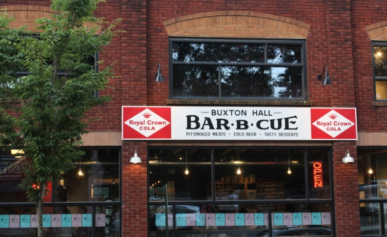

.png)
.PNG)
.PNG)
.PNG)
.PNG)
.PNG)
.JPG)
.JPG)
.PNG)
.PNG)


Alright, let’s talk a little bit about food today. üôÇ ¬†Asheville, North Carolina is foodie heaven! ¬†Because we were there only a couple of days, I did some research to find out the best rated restaurants. ¬†It seems that barbecue is a BIG thing in Asheville, so we decided to do some “comparison eating.” üôÇ ¬†Our first choice was the highly rated Buxton Hall.
It has only been open since August of 2015. ¬†Run by two James Beard nominees (South Carolinian, Elliott Moss and Meherwan Irani from India) the positive press and rave reviews that it has received is impressive! (So we had to check it out for ourselves. üôÇ )
The menus were posted outside, and the desserts sounded heavenly. ¬†Not even sure I wanted the barbecue after reading the dessert menu…just bring on the pies!
The little gift shop/waiting area was filled with nostalgic accessories and cute logo items to purchase. And there were also to-go foods for sale there as well.
And there were also to-go foods for sale there as well. How fun is this amazing retro stove?!
How fun is this amazing retro stove?!
(Where else would you display pies? Right?! üôÇ )
More pies were on display below that great chalkboard art. We had never heard of a “peaches and cream” pie, so this one especially intrigued us.
We had never heard of a “peaches and cream” pie, so this one especially intrigued us. Although all the desserts looked wonderful!
Although all the desserts looked wonderful!
Now to that amazing building. ¬†Buxton Hall is located in the old Standard Paper Sales Company building. ¬†It has been used as a boat showroom, several auto shops, and even a skating rink back in the 1930’s. ¬†Obviously, the owners kept that historic feel in place, and it made for a wonderful atmosphere…especially while we were dining there during a thunderstorm!
You can watch all the food being prepared in the open kitchen while you wait for your dinner. üôÇ
Here’s another look at their menu.
We made sure we all ordered different sides so that we could sample as many as possible. ¬†Everything was good. ¬†The collards were on the spicy side (but then I like turnip greens much better than collards, so I’m prejudiced here.)

I know we were on a barbecue mission, but we had to try that fried chicken. ¬†Glad we did because it was delicious! ¬†Their green beans get major rave reviews. ¬†I don’t remember them being that outstanding, but then we cook good green beans here. üôÇ
 And of course we had to try a couple of pies for dessert.
And of course we had to try a couple of pies for dessert.
Yum to both the banana pudding one and the peaches and cream!
(Although my husband said he liked “real” banana pudding better than a pie version.)
 And we left Buxton Hall quite full!
And we left Buxton Hall quite full!

And now for lunch the next day.
Another restaurant that had great reviews was 12 Bones. I knew it would look like an old barbecue joint and that there would be long lines, but with such good press we really wanted to give it a try.

And yes, it looked like an old barbecue joint outside…
and inside too. üôÇ
 One of the great things about 12 Bones is their assortment of creative sauces. From Blueberry Chipotle to Sweet Tomato and everything in between.  (I still prefer a traditional barbecue sauce on my ribs though.)
One of the great things about 12 Bones is their assortment of creative sauces. From Blueberry Chipotle to Sweet Tomato and everything in between.  (I still prefer a traditional barbecue sauce on my ribs though.)
 Each plate comes with cornbread and two sides. We really liked it all…the meats, the sides (including the jalapeno corn pudding, the cheese grits, and the collard greens.)
Each plate comes with cornbread and two sides. We really liked it all…the meats, the sides (including the jalapeno corn pudding, the cheese grits, and the collard greens.)

And because our daughter’s favorite drink is Cheerwine, she was thrilled that 12 Bones carried RC products. üôÇ

I would have to say that I preferred the food at 12 Bones over Buxton Hall, but I would happily dine at either. üôÇ ¬†And I am not the only one who likes 12 Bones. ¬†Check this out….
I believe the Obama’s have eaten at 12 Bones on each of their visits to Asheville. ¬†The restaurant has just recently moved to a new location, so I am really interested in seeing what it is like when we return to that area again. (Maybe we will run into the vacationing Obama’s. LOL) ¬†I liked 12 Bones so much and thought our son would also love it, so we purchased their cookbook for him.

12 Bones Smokehouse: A Mountain BBQ Cookbook
(My Amazon affiliate link for blog revenue.)
And that is all the barbecue we had while we were there. ¬†Besides The Market Place, Buxton Hall, and 12 Bones, there were a number of other restaurants (non barbecue ones) that I had printed out menus for us to try while we were there: Sunny Point Cafe, Creperie Bouchon, Biscuit Head, and French Broad Chocolate Lounge. ¬†Those will have to be for our next trip too. (I really hate we missed the chocolate one. üôÅ )
And good grief at the shopping! ¬† We loved visiting Malaprops Bookstore, Duncan and York,¬†and Traditions, but we did not get to Oddfellows Antiques, and¬†Dwellings¬†and like we had planned. Again, they will have to be for a future trip. üôÇ
Hope you have enjoyed seeing this tiny bit of Asheville, North Carolina with me. There is soooooo much more to enjoy there. We will need to plan a week long visit in the future. Now let me get busy finding some flowers for Valentine’s Day!
Until next time…


.PNG)
I loved the picture of the stove showing the pies. My home was built in 1961 and this is stove we had installed at that time. It went out about 6 months ago and was told could not be repaired because no parts available since so old, but I had a friend who is an electrician and he said he would rewire it for me and he did and it works like new. I was so happy. Always enjoy your blog. One of the best. Thanks for all the fun and interesting readings. Jean Roberts
Hi, Kelly,
I love your travel blog posts. Could you possibly share your travel research tips with your readers sometime? You always seem so prepared and thus are able to fit a lot into a trip. Even with apps and our phones, we seem to waste time trying to figure out what we’re going to do once we get to a new destination. Any help would be greatly appreciated!
Continued fun and safe travels,
Missouri Barb
PS Love your decorating posts, too! üòâ
You must add The Screendoor to your list of places to shop. It’s just up the hill from Biltmore Village.
Greetings from a fellow Cheerwine fan!
Cheerwine is my FAVORITE soft drink too!! I grew up drinking it every time I went to my grandparents who lived in Salisbury, NC, where it is made!
I grew up in Charlotte, NC and worked summers at a Girl Scout camp in Lake Lure, NC…not far from Asheville! One of my favorite places to visit!
Thanks for the tour!
My best friend lives in North Carolina. We have gone to see The Biltmore but nothing else in Asheville. When I go back for a visit, I am going to tell her we have to take a trip back and spend a couple of days and shop and eat! I am making a list of the places you listed. Thank you for being our travel “scout”!
12 Bones has been on my list since the Obamas visited. I love BBQ but being from the Piedmont of NC… I am a bit of a BBQ snob. There is a difference in BBQ made in the Piedmont and the BBQ made in the mountains. The best is made Tom Frazier but he doesn’t sell it…yet.
NOW I AM REALLY HUNGRY!! The desserts in the first place look amazing! But the BBQ in the second…wow. Your daughter is beautiful.
Mary Ann
Yum! I shouldn’t have read this before breakfast. üòâ Now I want BBQ – ha. I’ve found BBQ is always good at restaurants, but sadly the sides are “eh.” Glad the sides were all delicious too. üôÇ The pies look fabulous too. üòÄ
Great post Kelly …especially the pictures of the pies!! üôÇ thanks for sharing. I love these posts you do that include restaurants, menus etc. Makes me want to just hop on a plane!! I’m glad you all had such a great time. It’s always worth researching and booking restaurants before travelling …. so many great places to eat it’s a shame to have a poor meal! Like you, I usually end up wanting to go to more places than I have time for…. always a reason to return. We’ve actually found some great new places near to home recently as well üôÇ
Hope you’re having a good weekend.
Rosemary
Hi Kelly. What a post to wake up to! Everything so mouthwatering and tempting. The peaches and cream pie sounds divine. May have to look into making one very soon üôÇ
I am so happy you guys had fun in Asheville! The 12 Bones Cookbook is my daughter and her husband’s all time favorite cookbook. She uses it weekly and even gives it as a gift when her work counterparts from other parts of the country visit the Asheville office. Neeked ribs and greens is my daughter and son-in-law’s go to recipe in the cookbook.
Have an awesome weekend Kelly!
My sweet lord — can you get us the recipe for jalape√±o corn pudding? I love Asheville, but I haven’t been in a while. I have been looking for a little getaway, and I think you have just provided me with the motivation
Love the retro stove displaying the pies! It is just like the one I grew up with in Ohio in the 60’s & 70’s. Thanks for sharing.